Open-source · GPU & Ascend NPU
TorchX
A Unified Framework for
Predicting, Designing, and Scoring Biomolecular Interactions
1. TorchFold
Improving antibody–antigen structure prediction through large-scale distillation of sequence pairs
Changping Laboratory, Beijing, China
Corresponding authors: mingchenchen@cpl.ac.cn, ylcao@cpl.ac.cn
Changping Laboratory, 2026
Overview of TorchFold
TorchFold improves antibody–antigen prediction through three training components:
- An interface-specific loss concentrates the coordinate objective on the binding surface.
- A revised stage-2 noise schedule moves from stronger corruption to structural refinement.
- Two rounds of distillation convert antibody–antigen sequence pairs into confidence-filtered structural labels.
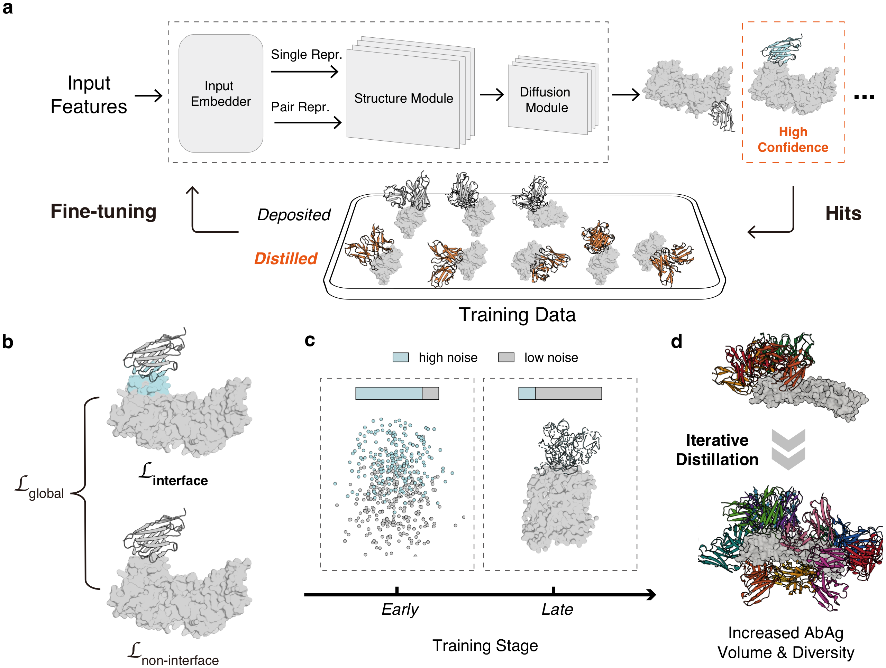
Two-round sequence-pair distillation
Accepted distillates add predicted epitope coverage and interface-contact patterns beyond those represented in SAbDab, broadening the recognition geometries available during training.
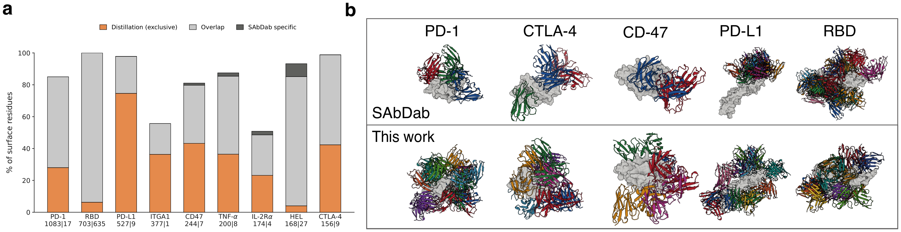
The from-scratch model was trained on Huawei Ascend NPUs and reached 34.0% ranked FoldBench success. It then predicted sequence pairs from computational designs, patent and private discovery collections, ASD, and CoV-AbDab; high-confidence complexes became first-round labels. Fine-tuning on these labels and experimental structures reached 65.9%.
The first-round model revisited medium-confidence candidates. Newly accepted structures expanded the final Ab–Ag training collection to about 24.5k examples and raised success to 70.1%.
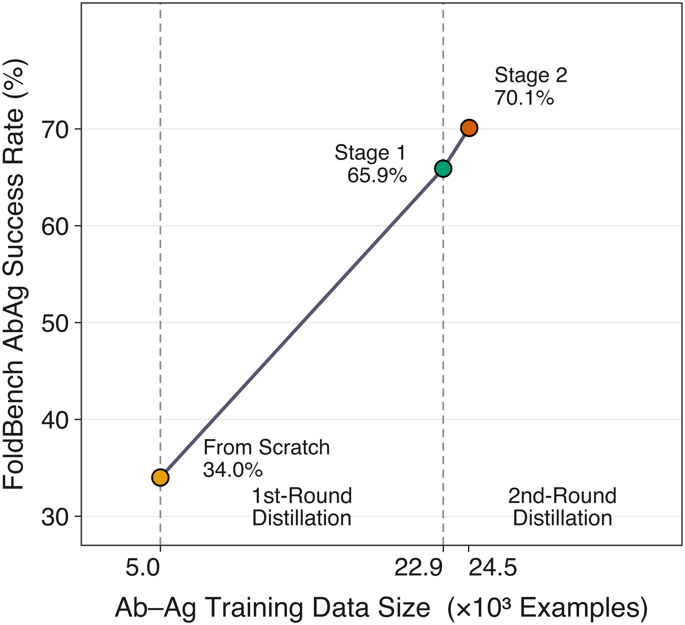
Antibody–antigen structure prediction
TorchFold was compared with AlphaFold3, Protenix-v2, and OpenDDE using a shared AF3 MSA pipeline. Success is defined at DockQ > 0.23; ranked and oracle results report the top-scored and best-sampled interfaces, respectively.
- Ranked FoldBench-AB success is 70.1%, with a substantial share of medium- and high-quality interfaces.
- The same evaluation is reported on CPL-28, PXMeter-AB, 2026ARK-AB, and AbAg2526 under identical settings.
- Oracle results exceed ranked results across all collections, showing that additional successful interfaces are present in the sampled ensembles.
- As a checkpoint-transfer experiment, AF3-TF loads the TorchFold-AbAg checkpoint into a compatibility-adapted AF3 implementation. Its success rates closely track TorchFold across all five benchmarks, showing that the learned antibody–antigen prediction capability is retained across implementations.

DockQ success-rate curve
Cumulative DockQ curves show that a substantial fraction of top-ranked predictions on FoldBench-AB, CPL-28, and PXMeter-AB fall in the medium- and high-quality regimes, not only above the acceptable cutoff. The AF3-TF curves remain close to TorchFold across the five benchmarks.

Test-time scaling
More inference-time samples improve both ranked and oracle FoldBench-AB success. At 100 seeds, TorchFold reaches 72.4% ranked success and 93.6% oracle success, showing substantial sampling headroom.
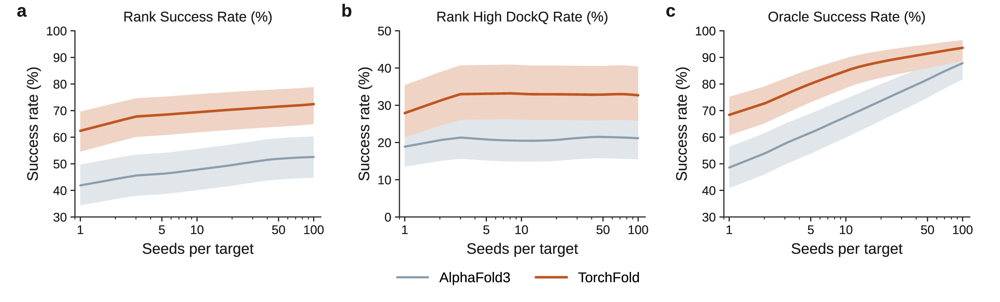
ipTM is a precise filter of successful interfaces
Across five pooled benchmarks, ipTM provides a precise filter for successful interfaces:
- At ipTM ≥ 0.8, 292/297 predictions have DockQ > 0.23 (98.3%), and 288/297 exceed DockQ 0.49.
- Mean and median DockQ are 0.80 and 0.84 in this high-confidence subset.
- At ipTM ≥ 0.7, precision remains 94.3% (416/441).
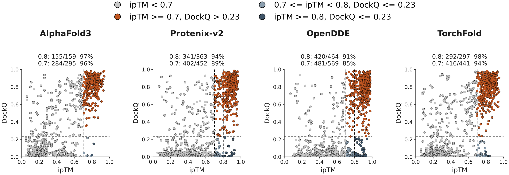
Accuracy by antigen length
TorchFold recovers 74% of interfaces for antigens up to 50 residues and 38% beyond 600 residues. Accuracy decreases with antigen length across the evaluated models.

Case studies
Three crystallographic examples illustrate accurate epitope localization and binding orientation. Experimental coordinates are gray, TorchFold cyan, and OpenDDE green.
- 7TXW: both Pfs25 interfaces are recovered (DockQ 0.90 and 0.85).
- 8AV2: the crystallographic leptin-receptor site is recovered (DockQ 0.88).
- 9JBQ: the PcrV binding mode is recovered (DockQ 0.96).
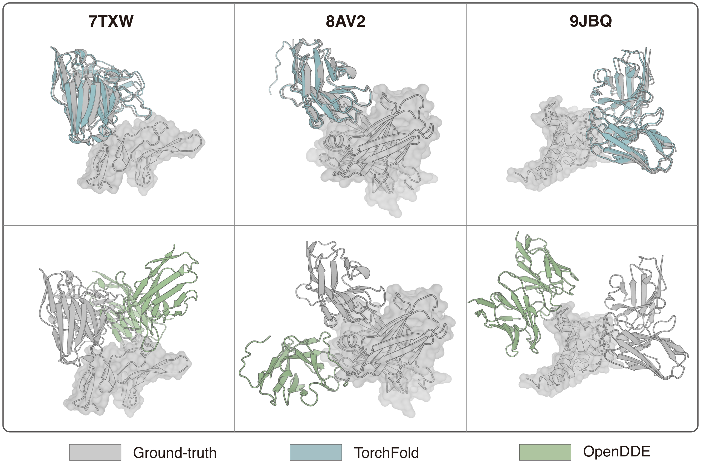
TorchScore for antibody–antigen structure evaluation
TorchScore bypasses diffusion generation and evaluates supplied coordinates through the TorchFold confidence pathway. It uses the same antibody–antigen model weights, with no separately trained network.
- On AbAg PDB55, TorchScore ipTM correlates with DockQ at Pearson 0.869 (RMSE 0.187).
- The score can be used to screen and rank candidate complexes without regenerating structures.
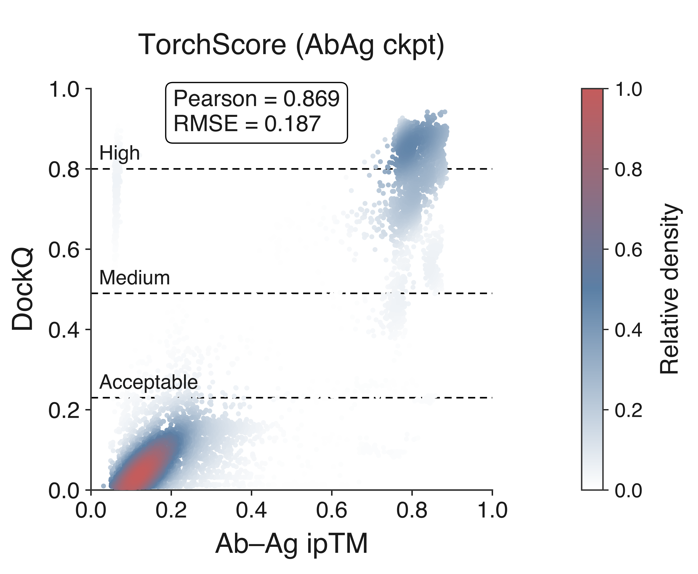
2. TorchCraft
TorchCraft: Unified binder design by inverting an all-atom structure predictor
Changping Laboratory, Beijing, China
Corresponding author: mingchenchen@cpl.ac.cn
Changping Laboratory, 2026
A frozen predictor as the design engine
TorchCraft optimizes editable sequence logits through a frozen predictor, using gradients from structural and sequence objectives.
- Confidence, contact, geometry, and sequence priors guide optimization.
- Continuous sequence representations are progressively discretized.
- The output is a designed sequence with its predicted all-atom structure.
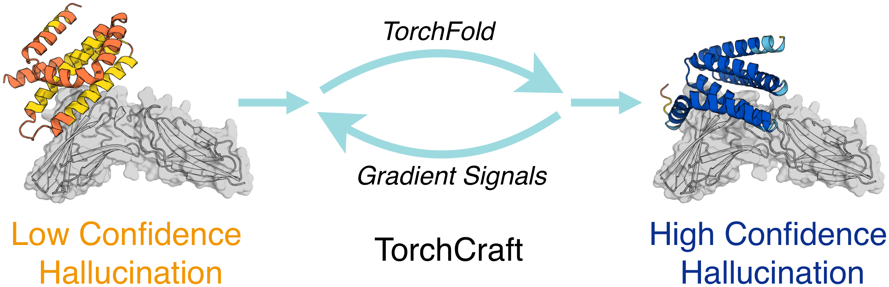
- One optimization engine covers minibinders, VHHs, cyclic peptides, and ligand-binding proteins.
- Tasks differ in editable positions, constraints, losses, and schedules.
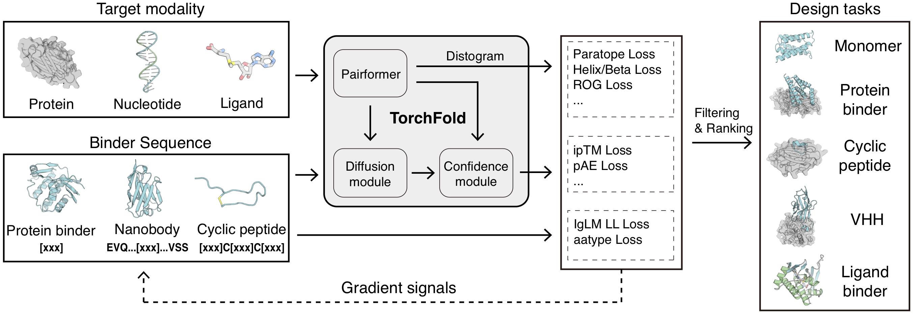
Minibinder design and validation
- Four design campaigns produced binders measured by multi-concentration BLI.
- Apparent dissociation constants were in the nanomolar range.
- Tested sequences came directly from TorchCraft without inverse-folding redesign.
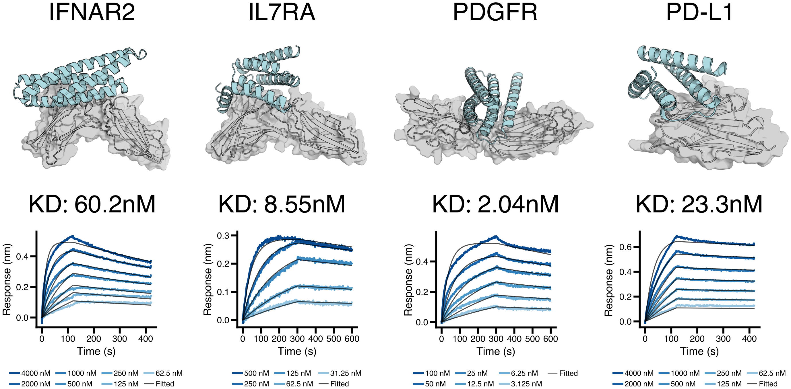
- An amino-acid composition regularizer improves sequence properties relevant to expression.
- A 12-target benchmark compares TorchCraft with BoltzGen and RFdiffusion using TorchScore.
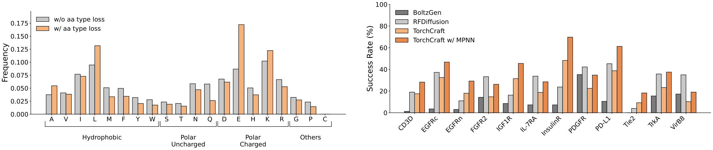
Framework-conditioned VHH design
- A predefined framework is fixed while the CDR regions are optimized.
- CDR-restricted IgLM guidance introduces an antibody sequence prior.
- Guidance improves IgLM likelihood and OASis humanness scores.
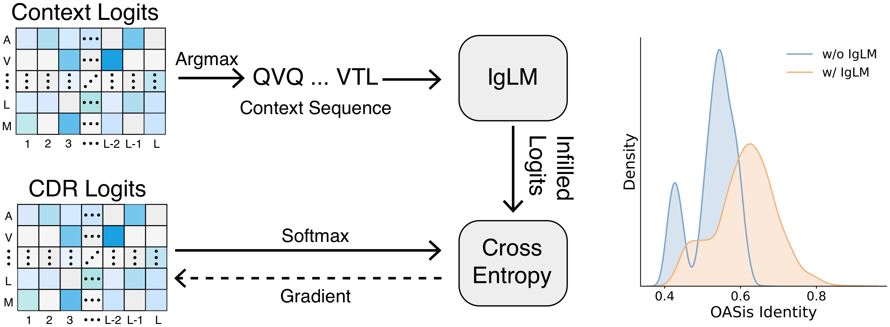
- Four VHH campaigns produced binders measured by multi-concentration BLI.
- Tested sequences came directly from framework-conditioned TorchCraft designs.
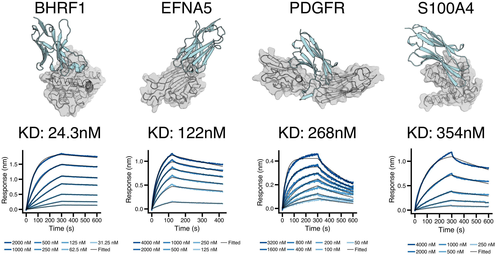
- A 15-target benchmark compares TorchCraft with RFantibody, BoltzGen, and Germinal.
- Optional AbMPNN redesign is evaluated separately.
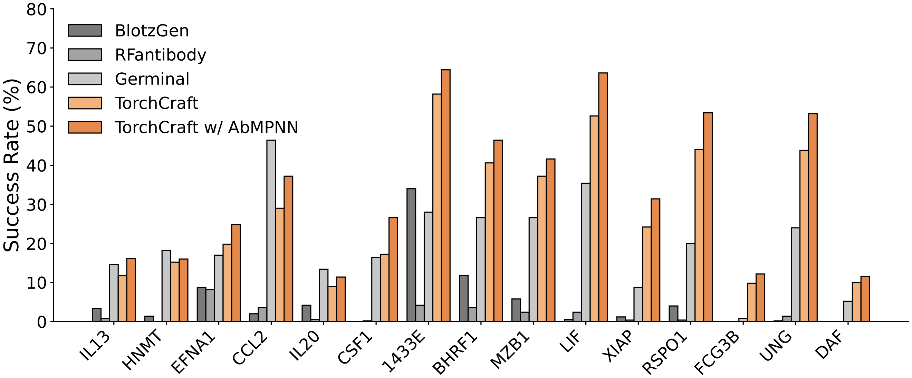
Cyclic peptides and ligand-binding proteins
- Head-to-tail peptides use cyclic relative positional encoding.
- Disulfide-linked peptides fix the cysteines that define cyclization.
- An eight-target benchmark compares TorchCraft with RFpeptides and BoltzGen.
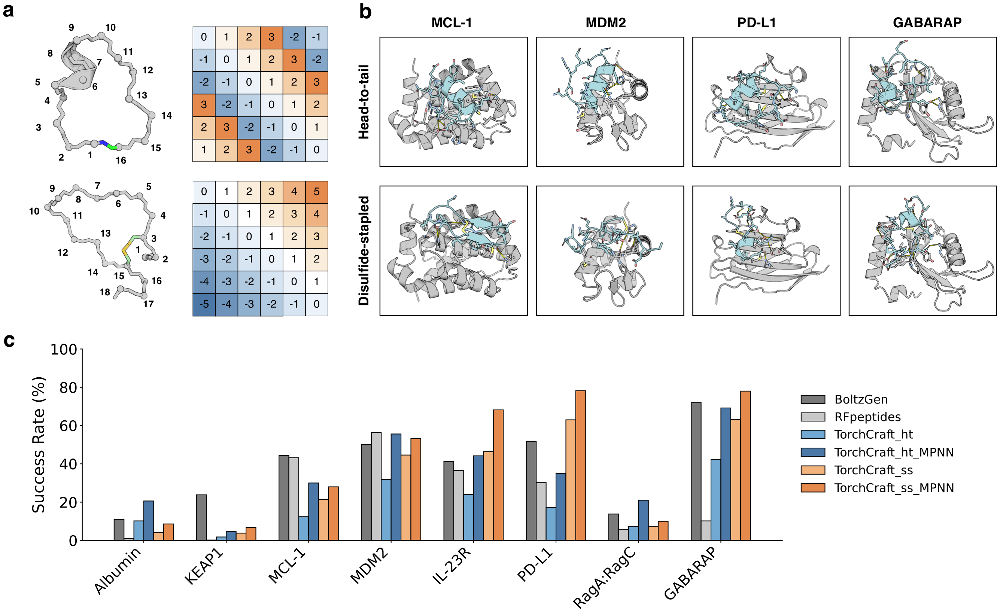
- Ligand-binding proteins are generated without a supplied native scaffold.
- A ligand-free warm-up precedes optimization of ligand contacts.
- Designs are evaluated with AutoDock Vina, Boltz-2, and TorchScore.
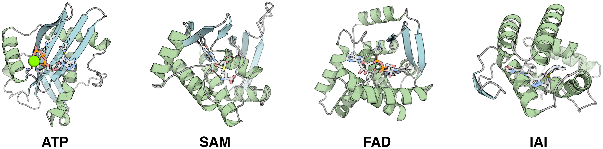
Runtime on GPU and Ascend NPU
| Code | Operator | Machine | 100 aa | 200 aa | 300 aa | 400 aa | 500 aa |
|---|---|---|---|---|---|---|---|
| NPU | w/ FA | 910B (64G) | 3.1 | 3.75 | 6.23 | 11.29 | 16.56 |
| NPU | w/o FA | 910B (64G) | 3.0 | 4.13 | 8.63 | 14.64 | 33.47∗ |
| GPU | w/ cuequivariance | A100 (80G) | 3.92 | 4.27 | 4.54 | 5.85 | 7.59 |
| GPU | w/o cuequivariance | A100 (80G) | 4.76 | 7.96 | 13.08 | 21.65 | 33.3 |
∗ Batch size 1; batch size 2 exceeded memory (OOM).
Citations
How to cite
TorchFold
Copy BibTeX@misc{chen2026torchfold,
title = {TorchFold: Distillation of diverse antibody-antigen interfaces improves structure prediction},
author = {Chen, Mingchen},
year = {2026},
note = {Changping Laboratory},
url = {https://torchx-cpl.github.io}
}
TorchCraft
Copy BibTeX@misc{chen2026torchcraft,
title = {TorchCraft: Hallucination-based all-atom protein design with TorchFold},
author = {Chen, Mingchen},
year = {2026},
note = {Changping Laboratory},
url = {https://torchx-cpl.github.io}
}